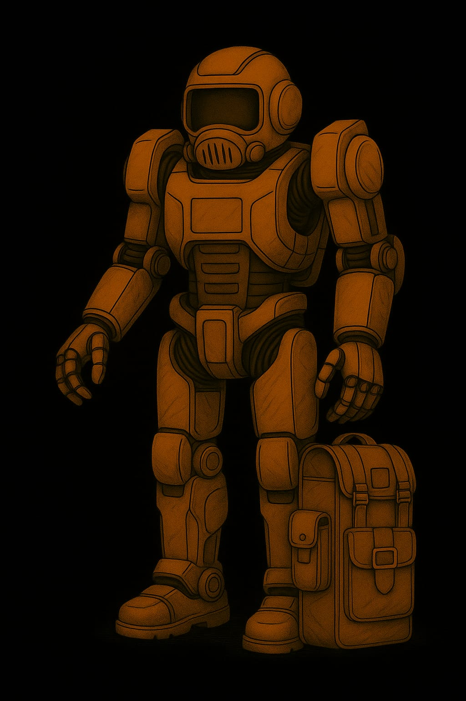
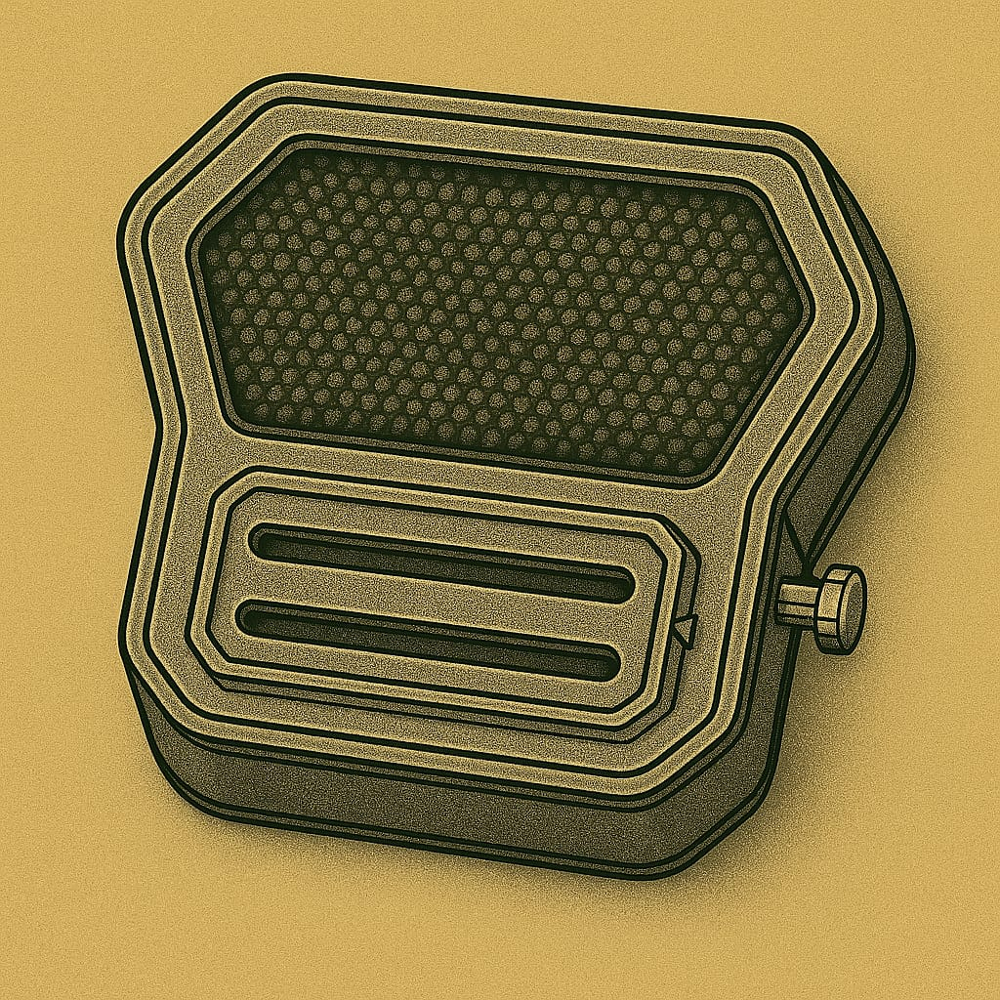

Anzüge
Leichtatmer
Für kurze Ausseneinsätze
Leichtatmer

Leichtatmer mit Helm

Kadetten-Anzug
Kadett Standard

Soldaten-Anzüge
Anzug mit Kommunikation-Einheit
Panzerhelm eines Soldaten - Typ 1

üõ° Panzerhelm eines Soldaten - Typ 3

Vollschutzhelm aus hochstabilem Verbundmaterial mit integriertem Panorama-Visier. Bietet maximalen Schutz bei Stürzen, Staubeinwirkung und extremer Sonneneinstrahlung. Kompatibel mit dem externen Anzugs-Filtersystem „Typ 5“. Ideal für Ausseneinsätze unter harschen Umweltbedingungen.
üõ° Schutzkappe des Lazerett-Piloten (LP)
Hartfaser-Kopfschutz mit leichtem Kinnvisier. Schützt bei Stürzen und vor Sonnenstichen im Freien.

Kopfhörer aussen am Helm und ein Mikrofon das magnetisch von aussen am Filter befestigt wird.


Rüstungen
Vollrüstung Militär

Helme

Handschuhe


Arbeitsanzug
[in Arbeit]